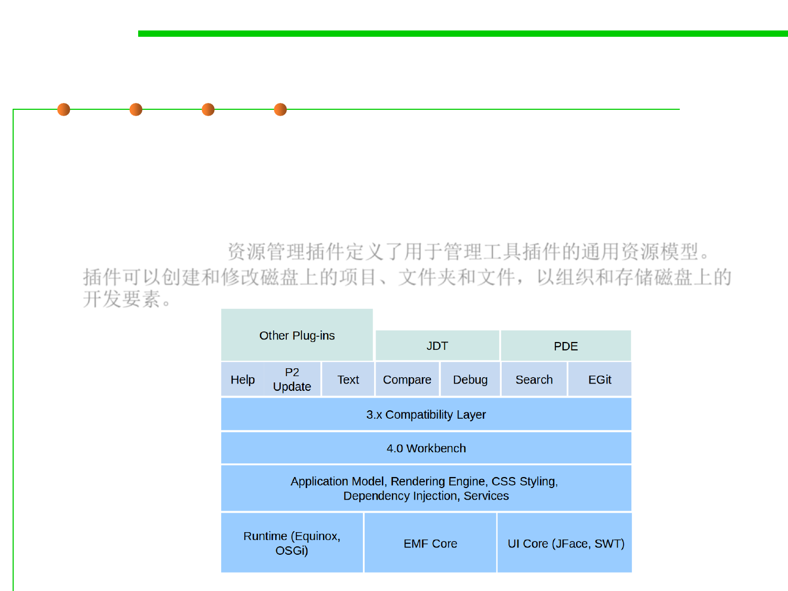

2.2 Process, Systems, and Tools of Software Construction
Core components of Eclipse IDE
▪ Resource management
– The resource management plug-in defines a common resource model for
managing the artifacts of tool plug-ins. Plug-ins can create and modify
projects, folders, and files for organizing and storing development
artifacts on disk.资源管理插件定义了用于管理工具插件的通用资源模型。
插件可以创建和修改磁盘上的项目、文件夹和文件，以组织和存储磁盘上的
开发要素。
–